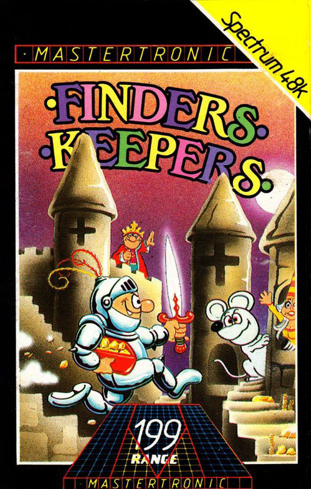
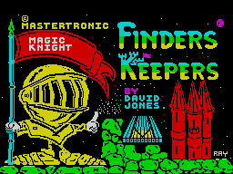
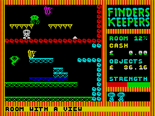

Finders Keepers


{kind=link}

| Publisher: | Mastertronic |
| Price: | £1.99 |
| Year: | 1985 |
| Source: | CRASH, Issue 13 |
Here’s the first of a batch of new year Mastertronic budget games. In Finders Keepers the King of Isbisima is upset because he has nothing to give his daughter for her birthday. As a magic knight you have been ordered to find the Princess Germintrude a very special present. Should you succeed you may be invited to become a Knight of the Polygon Table.

To carry out your appointed task, the king transports you to Spriteland which is a welter of platform-type screens and two mazes teeming with electro-historic nasties that sap your energy and useful objects in the shape of small white triangles.
There are two possible objects in this game; either you may elect to collect as many valuable objects as you can and escape from the castle, or you may collect the treasure to please the king and princess and join the polygon table. Finders Keepers is an arcade adventure, and ‘adventure’ in quite a literal sense, because when you are next to a white triangle you can examine or get it. On getting, you are given an inventory of what you already carry, and when the limit of five objects is reached you have the choice of dropping something first. Some objects react to form other substances, sometimes more useful than the original two, sometimes less, so finding a philosopher’s stone is good, because it will transform a lump of lead into a bar of gold. Scoring is in two sections; percentage of rooms explored and cash value of objects collected. Some objects are useful in as much as they can be traded with the ghostly traders who waft about, others have a function which will help you on your way.
The screen display is a square with a status panel on the right. The platform screens are all linked horizontally and vertically. Control is in four directions, up being used when on the move to jump. In the mazes, the knight remains centre screen, while the large maze scrolls across.
CRITICISM

platform game makes Mastertronic’s
best yet budget offering in
FINDERS KEEPERS.
‘It’s been a while since Mastertronic have brought out one of their cheapies. I must say that I was rather cautious while loading this game having seen some of their previous attempts at programming, but to my amazement, on playing this game I found that it would easily sell at £5.95. Yes, it is that good. Finders Keepers has a comprehensive joystick selection menu with some concise instructions, and there is also an option to define the keys. Graphics on this game are fast, smooth and very well animated. The plot is quite strong, making this a purposeful game and not just a collecting game, with your ultimate task to please the king and princess. I wonder why people are more often than not pushing cheapies that would quite easily sell at the full average retail price. It seems to me that they are losing out somewhere, but Mastertronic has always had an odd strategy to marketing, and it seems to work, and definitely will work with this game.’
‘Most Mastertronic games have disappointed from the word go, although some have been quite playable, they have all lacked a lot in the graphics. Finders Keepers puts the record straight immediately with brightly coloured, imaginative and fully animated characters. The scrolling on mazes is particularly good. The idea is simple enough, but the fun comes from collecting objects — there are a lot, and of course you never know what each will be. Although each play reveals the same objects in the same place, picking up and dropping soon muddles them up and makes life more complicated. Generally, a game with pleasing and slick graphics, and enjoyable story line, and with a fair amount of addictivity.’
‘One element of this game that I find most pleasing and satisfying is that two objects, if thoughtfully put together will have a chemical reaction and form a (usually) valuable new object. I really think this is a neat point to the game and does tend to get the player thinking and not just trying to collect as many objects as possible. Another aspect that’s pleasing is the combination of platform and maze game, two totally different skills are needed for each. There is, I suppose, an adventure type skill also needed, which goes to say that this game is dedicated to 50% thinking and 50% playing, yet it is an arcade game. One thing that I couldn’t get the hang of though, was trading. I just didn’t seem able to trade any of my objects — oh well, there are more things to life than making money (or is there)? To sum up Finders Keepers it seems to be exceptional value for money, and a distinct improvement on any of Mastertronic’s previous budget games. Is this the way the software industry is headed, competition not between good games and bad games, but competition between two good games but at different prices?’
COMMENTS
| Control keys: | User definable, eight required, four directional and keys for Get, Trade, Droplist and Examine |
| Joystick: | Kempston, Fuller, Sinclair 2, AGF, Protek |
| Keyboard play: | Very responsive |
| Use of colour: | Excellent |
| Graphics: | Very good |
| Sound: | Good |
| Skill levels: | 1 |
| Lives: | 5 |
| Screens: | Unknown, but many including continuous scrolling on mazes |
| General rating: | A neat and fairly original game with good playability and excellent value at the price. |
| Use of computer: | 90% |
| Graphics: | 82% |
| Playability: | 80% |
| Getting started: | 79% |
| Addictive qualities: | 79% |
| Value for money: | 99% |
| Overall: | 85% |